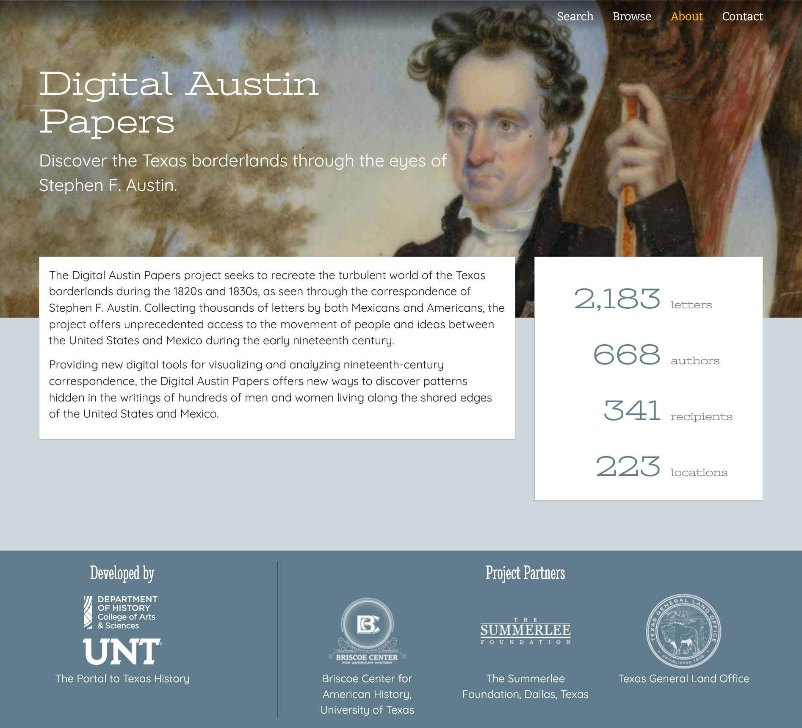
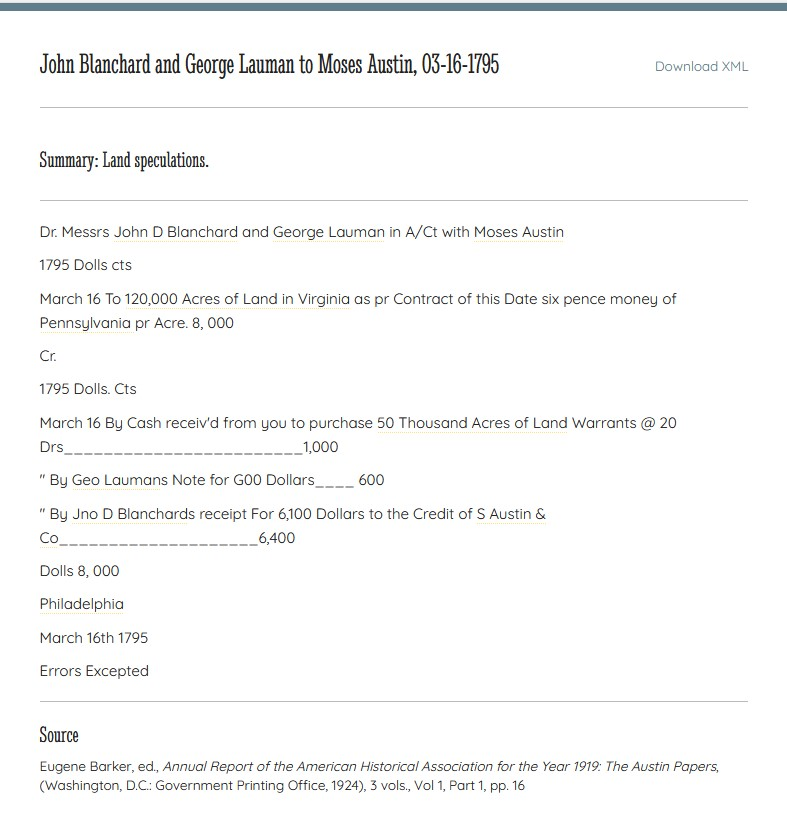
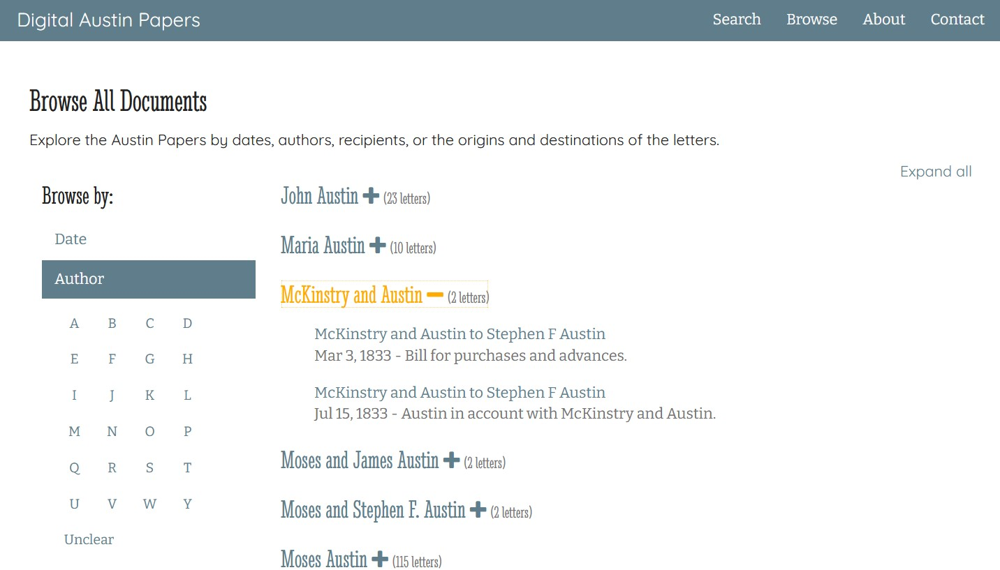
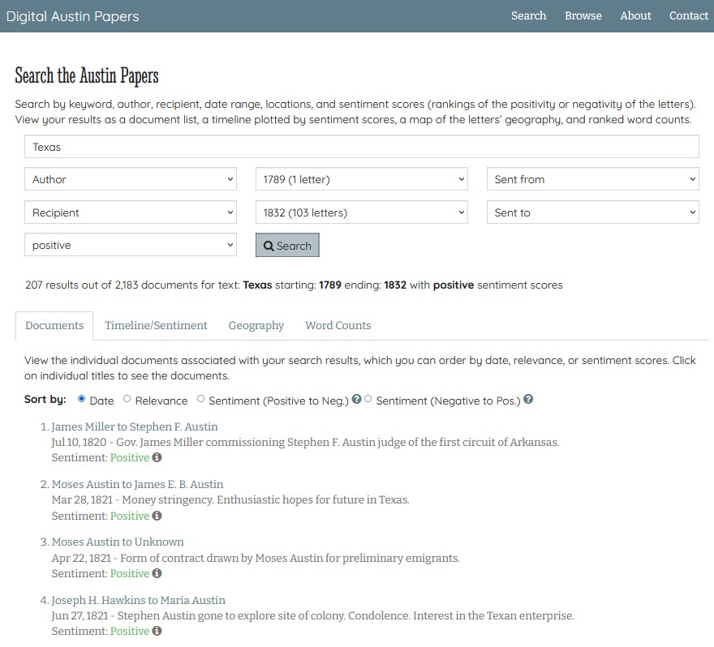
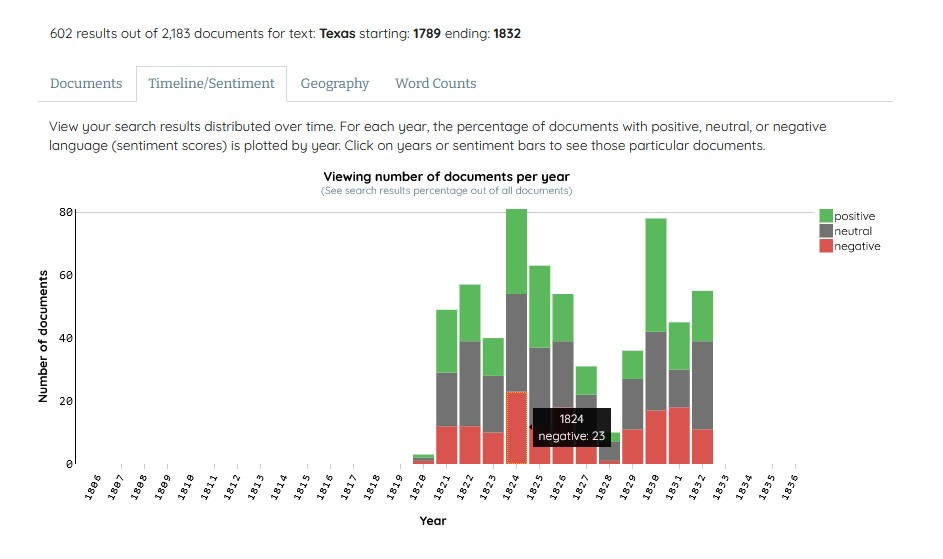
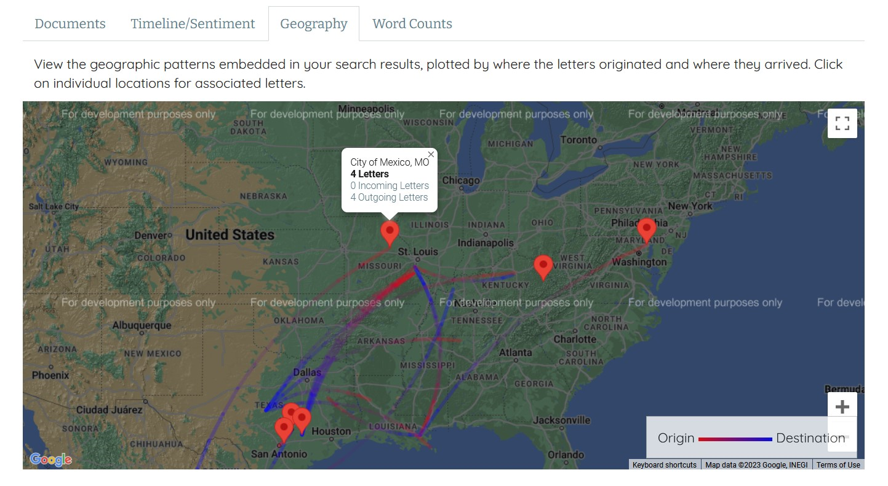
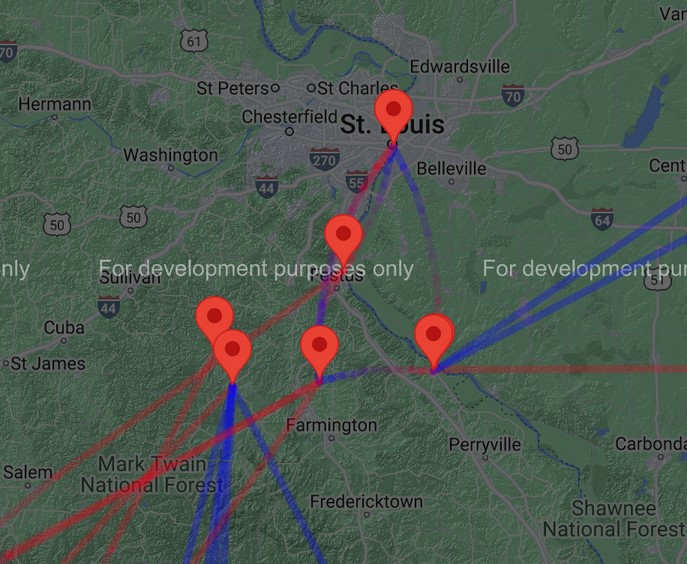
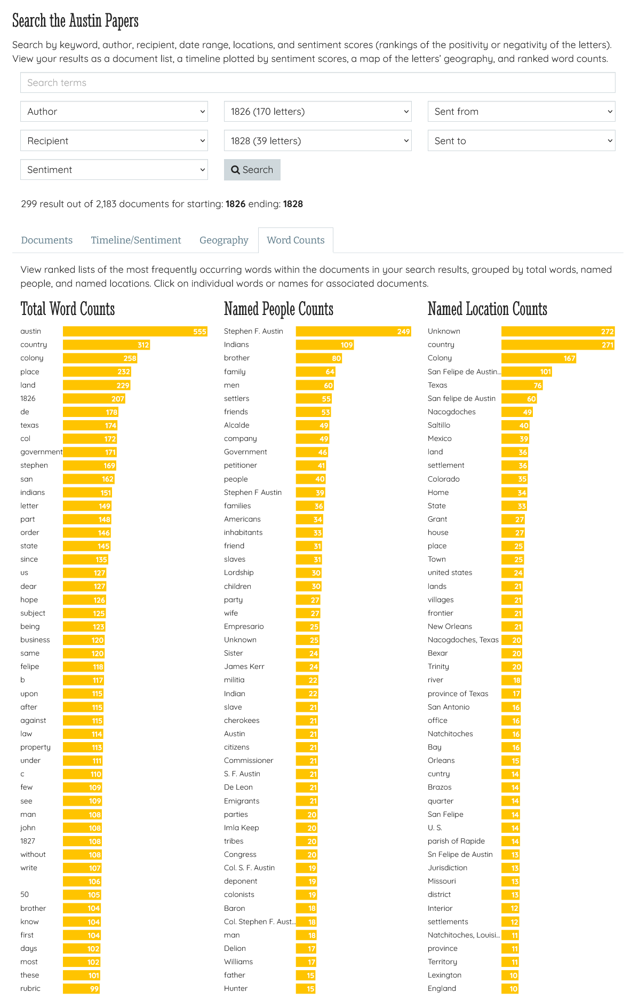

Digital Austin Papers
Table of Contents
Abstract
The digital edition Digital Austin Papers (DAP) collects the correspondence of Stephen F. Austin and a selection of key associates from the 1820s and 1830s. It provides valuable insight into the changes occurring in the Texas borderlands during the early 19th century, both politically and socially. DAP offers full-text views of the collection of letters and two methods to download their TEI/XML files. Great emphasis is placed on browsing and search functionalities, striving to test new ways to discover patterns within the dataset. Its incorporation of sentiment analysis is one of DAP’s more unique characteristics. DAP has great potential but requires some additional data processing (e.g. assigning authority file IDs) to achieve it.
Introduction
The subject of this review is the digital edition Digital Austin Papers (DAP), developed at the Department of History, College of Liberal Arts & Social Sciences at the University of North Texas1 and The Portal to Texas History2. The edition invites its users to “discover the Texas borderlands through the eyes of Stephen F. Austin” (Digital Austin Papers 2016b), the “Father of Texas”. Specific focus is placed on the turbulent times of the 1820s and 1830s.
The early 19th century “constitutes a significant chapter in demographic expansion of English speakers into Spanish and Mexican territory” (Cummins 2019, 172). Settlement interactions between Anglo and Spanish parties began during the era of the American Revolution with the arrival of the first Anglo-Americans in the Mississippi Valley. The situation reached its “final chapter” with the arrival of Anglo-Americans in Spanish Texas during the 1820s (Cummins 2019, 172–173). As a prominent land agent, Austin was in a unique position, working closely with all three parties.
On the 17th of January 1821, Moses Austin (Stephen F. Austin’s father) acquired permission to settle 300 families in Spanish Texas. Upon his father’s death in the summer of 1821, Austin took over his family’s venture. Through skilful and diplomatic negotiations, Austin was able to renew the official grant, and so the legal settlement of Anglo-Americans in Spanish (later Mexican) Texas commenced (Taylor 2015). Austin’s efforts were successful. Over the next few years, he acquired three further grants to settle 900 more families in the colony (Texas State Library and Archives Commission). During the 1820s and 1830s, Austin became “the most prominent land agent working with the government of Mexico to bring colonists from the United States into the Texas borderlands” (Digital Austin Papers 2016a). Austin's significance to the region during this period is also reflected in the naming of the modern-day capital of Texas as “Austin” (Humphrey 2023).
The numerous and well-preserved correspondence of Stephen F. Austin provides a deep insight into the historical circumstances in and around Texas in the 1820s and 1830s, particularly within the social, political, and cultural fields. The corpus documents the climate and events affected by the shifting border boundaries of the time. It is an invaluable resource for researchers of the border regions, available and searchable in the digital edition, DAP, since 2016.
DAP mainly presents Austin‘s correspondence, although it also includes relevant correspondences belonging to family members and key associates. The content of the digital edition builds on Eugene C. Barker’s printed edition of the Austin Papers.3 DAP aims to make the Austin correspondences available in digital form and to experiment with and provide new exploratory methods for discovering patterns within the corpus. One explorative method that makes DAP unique and sets it apart from its printed counterpart is the incorporation of sentiment analysis. Overall, the digital edition’s range of browsing options is arguably its biggest asset.
The editorial staff of the project consists of Andrew Torget and Debbie Liles. Ben W. Brumfield, Jason Ellis, Sara Carlstead Brumfield, William Hicks, Stephen Mues, Karin Dalziel, Deborah Kilgore, and Cameron Sinclair form the technical staff. DAP is a completed digital project, that is to say, it is an edition where the funding period has come to a close. However, it could still have more to offer, which I will point out in this review. Unfortunately, there is no saying whether future funding may occur.
Apart from that, its status as a completed project makes it possible to draw a proper conclusion on whether DAP achieved its objectives. This review will address different aspects of DAP step by step. Specific focus will be placed on the contents of the edition and data exploration possibilities.
Design and Usability

The homepage offers a short introduction, providing context to the subject matter and highlighting the aim of the digital edition. A box to the right gives an overview of the total number of letters, authors, recipients, and locations presented in the edition.5 This is a welcome sight, as it gives the user a preliminary understanding of the subject matter and scope of the project. Although the introduction states that the digital edition focuses on “the turbulent world of the Texas borderlands during the 1820s and 1830s” (Digital Austin Papers 2016b), there are documents dated as early as 1789. The scope of DAP could be described in more detail on the homepage. As it is, users will only find this information when exploring the materials or reading the ‘About’ page. This observation also applies to the correspondents, as DAP holds letters not addressed to or composed by Stephen Austin.
Starting from the homepage, the collection is accessible through one of two means: The first is through the navigation bar with links to the ‘Search’, ‘Browse’, ‘About’, and ‘Contact’ pages respectively. The second is by clicking on the number of letters, authors, etc. found in the ‘counter box’. Selecting the total count of authors and recipients leads to the ‘Browsing’ page with the respective filter selected. In contrast, clicking on the total number of locations leads to the search. This may not seem intuitive because no specific location is selected for the full-text search. As a user, I expected a different destination: the browsing page with ‘origin’ or ‘destination’ selected, as is the case with the senders/recipients. For this to be plausible, the statistics would need to be adjusted to ‘origin’ and ‘destination’.
Overall, the website is easy to navigate. All relevant information is readily available and the navigation is relatively intuitive. This is aided by the fact that the website does not have many sub-sites that require users to click to the next page. The website itself is monolingual: all the texts and labels are in English.
Content of the Edition
Digital Austin Papers primarily focuses on the correspondence of Austin from the 1820s and 1830s. This includes a variety of document types such as letters, contracts, accounts, and more. The documents included in this digital edition are not limited to those penned by or sent to Stephen F. Austin. Several manuscripts belong to Austin’s family members and key associates.
At present, the digital edition consists of 21836 letters. The corpus covers the English-language documents collected in Eugene C. Barker’s printed edition of the Austin Papers, and additional English-language documents found in the Dolph Briscoe Center for American History (DB-CAH). A key factor in the decision to utilise the letters collected and transcribed in Barker’s edition is one universal to all edition projects: the need to allocate the project’s limited time and funding efficiently. As clearly stated in the project’s ‘About’ page, digitising the letters from the printed edition offered a greater return than creating new transcripts from the manuscripts. The main argument is the accuracy of Baker’s transcriptions of the original manuscripts.7 I am sure the community can appreciate this decision, especially since it also allowed the editors of DAP to allocate time to include additional papers that were previously left out of the Barker edition and were only partially available in various scattered collections. Scholars now have the opportunity to browse everything on one platform.
The decision to focus solely on the English texts in the preliminary stage of the project is not explicitly justified. Even though the majority of manuscripts are in English, there is also a substantial portion in Spanish and other languages (for example, the “Moses and Stephen F. Austin Papers” collection in The Portal to Texas History consists of 80% English and 19% Spanish texts). Taking a multilingual approach would be a great asset to the edition. On a positive note, further material with the same base conditions is available and could be used to extent the digital edition.
DAP covers a variety of different materials, spanning from personal
letters to documents sent to or from political and bureaucratic bodies. A quick query
for the distinct values found in //textDesc/channel of the XML files
reveals that there are 174 channels by which their contents are categorised.8
The following list provides the first ten channel modes found in the XML files.
- "Letter"
- "Remarks"
- "Contract"
- "Agreement"
- "Statement"
- "Statement"
- "Memorandum"
- "Account of Shipment"
- "Statement of Account"
- "Militia Commission"
This small snippet of values shows how diverse the content of the corpus is regarding the different document types. The breadth of materials alone makes this digital edition a useful resource for scholars from different fields, working on different research questions. Unfortunately, the channel count given above is not quite accurate and exaggerates the variety within DAPs documents. The values given in the XML are not always consistent, evident here in the two ‘Statement’ values, only deviating by a whitespace. Combinations of document types, such as ‘Letter / Court Case’, are also present in the XML files. As useful and interesting as this information is to researchers, such combinations complicate the data model and machine readability. Pros and cons should be discussed and made transparent. Overall, some data cleaning is needed before reliable conclusions can be drawn. Once cleaned, the categorisation of the documents would make an interesting browsing option for DAP, providing new perspectives on the dataset.

Taking a closer look at the XML files, the text encoding of the data seems rather sparse. A key point to begin with: DAP’s XML follows the TEI-P5 guidelines, version 2.3.0, and was validated against the version 2.3.0 P5 DTD.11 The project’s documentation makes no mention of a project-specific schema. By following the TEI format, and clearly documenting this decision, DAP facilitates possible future integration of its data into other corpora. Thus, DAP fulfils one of the aspects recommended by the FAIR principles.12
Also found in the project’s documentation is a description of the XML file creation process. This includes a summary of the steps starting with the initial digitization, transcription through OCR, and finally editing/tagging. There is mention of various metadata fields to be included in the XML files, as well as some data points to be tagged.
Concerning the <body> of the texts, the documentation
only states that mentioned people and places were tagged. Looking at the XML files it
is clear that these requirements have been met. Next to some minor stylistic and
structural tags such as <div1>, <p> and
<hi>, the focus has been placed on people, places, and dates.
Considering DAP’s aim to explore sentiment and topic modelling based browsing
functionalities, further tagging of the text body is not strictly necessary. Name,
place, and date tags cover all the remaining search options.
It is worth mentioning, however, that the tagged people and places do
not come with @ref, project-specific IDs or Authority File IDs. This is
a missed opportunity, especially considering that the standardized place names found
in the <teiHeader> (<placeName type="origin"> and
<placeName type="destination">
13)
were passed through Geonames to collect coordinates for the map-based browsing
interface. It should not pose too much work to retroactively create project-based
person IDs or add geoNames IDs in the XML files, should work on the project continue
in the future. On the other hand, including Authority File IDs for correspondents may
require more effort and a deeper understanding of the subject matter. The results,
however, would be worth the effort. These additions could improve some of the search
results discussed later in this review. The interoperability and reusability of DAP’s
data would also be positively affected, as it improves the finding and linking of
people/places across projects.
Overall, the data has much to offer, more than is currently tagged. One
example would be organisations mentioned in the text. Occasionally, these are tagged
as places (<placeName>) rather than institutions.14
Stephen F. Austin’s role as a land agent meant that he had close connections with
government institutions and small businesses. Tagging these mentions and
incorporating them into the search would lead to new research opportunities. Creating
and presenting a list of all tagged organisations and their frequency could prove
very interesting.
Having said that, it would be remiss not to mention the inclusion of the
<revisionDesc> element and the <change>
tags. These tags document major changes made to the files, when these occurred, and
who was responsible for the changes. By incorporating this information in the
<teiHeader>, DAP takes measures to ensure documented versioning
of its data. The data stages pertaining to the first two major changes (“Digital
creation of XML file” and “Restructured to meet TEI P5 standards”15) can
be compared in the project’s GitLab repository, in the folders ‘source_xml’ and
‘teip5_xml’.
Documentation
DAP’s documentation is primarily located on the ‘About’ page of the website. The informative text is divided into eleven sections: Overview, Austin Papers in Manuscript and Print, Creating the Digital Edition, Transcription and Markup, TEI and XML, Data Transformations for the Online Browse and Search Interfaces, DAP Browsing Interface, DAP Search Interface, Sentiment Analysis, Future Development of DAP, and Copyright. Each section gives a concise description of the relevant aspects of the project and provides external links to repositories or secondary literature when applicable. Overall, the documentation is well executed.
The more technical aspects of the digital edition16 are recorded in a way that can be easily understood, making it accessible to all users regardless of their technical proficiencies. Personally, as someone more familiar with the coding and technical aspects of digital scholarly editions, I find that there are one or two occasions where I wish the documentation had gone into greater detail. One example is the inclusion of links to the GitHub repository of the open-source ruby sentiment analysis libraries used in the testing process.
Historical context for the edition is provided in abbreviated form on the homepage and in slightly more detail on the ‘About’ page. Overall, the contextual information is only sufficient for users with prior knowledge of the time period and the key figures portrayed. To ensure a better understanding and appreciation for DAP’s subject matter, the editors may consider adding a new page dedicated to the historical context of the project. Similarly, a DAP-specific bibliography with project-relevant sources would be a useful addition, if developments on the project recommence.
Licensing and Citations
The DAP is licensed under a Creative Commons Attribution-ShareAlike 3.0 Unported License.17 This information is easily found under ‘Copyright’ on the ‘About’ page. Alternatively, a detailed Apache License text is available in the project’s GitHub ‘Digital Austin Site’ repository.18 Without reopening the discussion of which licence is most suitable for a digital scholarly edition, the chosen licensing permits free access to reuse and adapt the project data. In the age of open access and linked open data, this is a welcome sight to all researchers. Regarding DAP’s citability, some things are left to be desired. Neither the digital edition as a whole nor the individual letters in the corpus offer a citation suggestion or permalink. Although a convenient addition to any edition, this can be excused if all relevant citation information is found easily on the website.19 Unfortunately, this is only partially true for DAP. The digital edition does a commendable job of recognising its contributors, and listing the names and roles of the editorial and technical staff (both on the website and in the XML files).20 The developing institutions and project partners are also clearly named in the website footer. Unfortunately, the date of publication, or alternatively the general runtime of the project, appears to be missing. I recommend amending this data point as soon as possible.
Despite this minor criticism, the digital edition does a thorough job of ensuring users know how and to what extent their materials are reusable. Combined with the two XML download options available to users (direct download of single files or in bulk from the GitHub repository AustinTranscripts), DAP lays the foundation for transparency of the research process and enables access to data for futher research.
Data Exploration
The area in which DAP particularly excels is offering its users many different views on the documents. Subdivided into browsing and search functionalities, both approaches are accessible through the navigation bar and the counters provided on the home page of the digital edition.
Browsing

A noteworthy programming choice is how documents with two or more authors (or recipients) are presented in the browsing results. As can be seen in figure 3, these letters are listed under a collective header consisting of all names rather than being placed under the individuals’ entry. This presumably stems from the process by which the names and correlating documents are collected.21 An author’s list of correspondences does not necessarily include all the letters which can be associated with that person. Their co-authored or co-received letters are found in separate lists. A combined list would give users a better understanding and overview of the correspondences in which every person was involved in. Furthermore, given that no registers were used for this project, it is unclear how identical names for different people (if at all present) were handled.
Search

The sentiment-based search is a unique characteristic of DAP. Although letters often act as the corpus in sentiment analysis projects,22 to my knowledge, this method is not often incorporated into scholarly digital editions and their web platforms. The sentiment scores in DAP were calculated using TextMood. Based on the available documentation, I was not able to discern whether a project-specific dictionary was used.
Once a search is initiated, the results can be explored through four different views/methods. The first and initial viewer is a general list of results. As shown in figure 4, the results can be sorted by date, relevance, and sentiment scores. Each result provides the title of the letter, date, summary, and sentiment score. The sentiment score is given as ‘positive’, ‘negative’, or ‘neutral’, with a specific score appearing when hovering over the question mark icon. These scores are an approximation of the overall emotion projected in the text and should be treated as such. Emotions are very subjective, and in some cases, the assigned scores are not self-evident when reading the letter.23

- the number of documents found per year.
- the proportion of search results in a given year compared to the total of all documents.
The documents per year are grouped by sentiment (positive, neutral, negative). Clicking on a particular sentiment grouping within the histogram results in a new search with the parameters year and sentiment preselected. This form of data visualisation is a great way to gain a better overview of the distribution of the data, both in terms of the temporal distribution and the grouping of sentiments across time. Combining these two aspects is particularly interesting within the context of DAP and its subject matter. As mentioned previously, the documents cover a time of great change in Texas and the surrounding areas. The histogram helps visualise if and when the political and social changes are reflected in the emotions expressed in the letters. Be this in personal letters or official documents.
Given that the search methods discussed up until now both incorporate sentiment scores in their presentation, I would like to point out a few observations. As discussed in the documentation section of this review, the overall methodology for calculating the sentiment scores is well documented. In terms of re-usability, however, it is disappointing that the sentiment scores per document are not provided in the GitHub repository or the TEI header section of the individual XML files. These results can be valuable for other projects. They could be used as a part of a research project or as a comparison/guide for other digital editions aiming to incorporate sentiments in their tool.


The fourth and final viewer is the word count. I have yet to come across another edition that provides a word count per search results. Therefore, this final viewer is a good example of how DAP strives to provide new methods of exploration.

The second observation is that the overall word count occasionally returns single numbers and letters as results. In lieu of documentation, I can only speculate what the cause may be. Stop words such as ‘a’, ‘and’, ’the’ seem to be excluded from the word list. After testing different search combinations, I have found that the results seem to improve with a greater number of letters in the results collection.
Despite this, the word count view is an interesting addition to the digital edition. Similar to the mapping, and timeline/sentiment viewer, the word count provides a new perspective on the collection. The results can provide users with a first impression of the topics handled in the documents, and help identify important persons/places based on the number of overall mentions.
DAP and the FAIR Principles
DAP covers various aspects of a digital edition following the FAIR principles, but some areas can be improved on.
Finding the edition for first-time visitors may be tricky, as it is not registered in well-known catalogues such as the “Catalogue of Digital Editions” and “a catalogue of: Digital Scholarly Editions”. DAP is, however, the first result found in a regular search engine. Once on the platform, researchers have full access to the collected and processed data. The documents can be explored using the website interface or downloaded individually as TEI/XML files. Alternatively, users can access the web code and data through the project’s GitHub repository. This is a recommendable aspect of DAP as it is open access and offers researchers another place to find the project’s research data. To further improve the findability of the data DAP could consider publishing its data in subject-relevant repositories, if available. Doing this would place the project in context with similar editions and make it visible to a wider audience. The materials are easily accessible and available for re-use under a CC-BY-SA 3.0 licence. DAP does not provide an API to permit automatic queries of the data.
The brief but concise documentation provides information on all of the
steps involved in the development of DAP, as well as the reasoning behind them. This
allows users to gain a full understanding of the source material and the processing
involved. Major changes made to the TEI/XML are recorded in the
<teiHeader> of the files, along with the individuals
involved.
DAP adheres to the norm in terms of the data format. Its documents follow the TEI-standard; the precise version and schema used for validation are recorded and easy to find. A project-specific schema was not used, which is understandable given the comparatively low level of data tagging. Nevertheless, the lack thereof can affect the reusability and interoperability of the research data.
The same applies to the data modelling, which leaves room for improvement. Project-relevant aspects were included in the data model, such as mentioned people and places, and the creation/destination locations of the documents. Unfortunately, these data points were not assigned project-specific IDs or Authority File IDs. Including these would improve certain aspects of the data, such as better facilitating its integration into- or cross-referencing with external sources.
Conclusion
Digital Austin Papers offers researchers a platform to search through and access Stephen F. Austin’s vast collection of correspondence from the 1820s and 1830s. The edition aims to test and provide new ways to explore its material, revealing new patterns hidden within. The project’s ‘Browsing’ page offers users the standard array of filter options: correspondents, location, and date. The ‘Search’, on the other hand, is where DAP sets itself apart. It demonstrates how different approaches and methods can be integrated into a digital edition to reveal new perspectives on the data. An example of this is the inclusion of sentiment analysis. This method is interesting given the historical climate in which the correspondences were written. When combined with time as a factor, this functionality can reflect emotional changes during a time when society and politics were in flux.
The subject material is accessible on the DAP website and in the project’s GitHub repository, where the TEI/XML files are available for reuse under a CC-BY-SA 3.0 licence. The project’s documentation explicitly encourages this. Overall, DAP briefly addresses all the different aspects of the edition, explaining certain decisions made in the development process. For example, DAP clarifies why they chose to unitise the Barker edition for its transcriptions.
The materials handled in DAP are valuable resources for scholars interested in the Texas area during the early 19th century. The documents hold first-hand accounts and reactions to the historical events leading to the Texas Revolution. For this reason, DAP has the potential to provide its researchers with more in-depth access to the materials than currently provided. The data modelling is relatively simple, covering core aspects such as mentioned people and places. Addressing other aspects of the text, for example, mentioned organisations and discussed topics would offer additional entry points into the corpus. Providing more historical context would also give researchers a better framework by which they can explore DAP’s historically rich materials.
Overall, I find that Digital Austin Papers succeeded in its aims and brought forth a valuable and interesting digital scholarly edition. It also has the potential to improve its offer, in terms of both the volume and quality of data.
Bibliography
- Barker, Eugene C. 2021. “Austin, Stephen Fuller.” Handbook of Texas Online. https://web.archive.org/web/20230311192159/https://www.tshaonline.org/handbook/entries/austin-stephen-fuller.
- Bleier, Roman. 2021. “How to Cite This Digital Edition?” Digital Humanities Quarterly 15 (3). https://web.archive.org/web/20230419101557/http:/www.digitalhumanities.org/dhq/vol/15/3/000561/000561.html.
- Brands, Henry W. 2019. “When Mexico’s Immigration Troubles Came From Americans Crossing the Border.” Smithsonian Magazine. https://web.archive.org/web/20231211104502/https://www.smithsonianmag.com/history/americans-illegally-immigrated-mexico-180973306/.
- Britannica, The Editors of Encyclopaedia. 2023. “Daniel Boone.” Encyclopedia Britannica. https://web.archive.org/web/20231211101528/https:/www.britannica.com/biography/Daniel-Boone.
- Cummins, Light T. 2019. To the Vast and Beautiful Land: Anglo Migration into Spanish Louisiana and Texas, 1760s–1820s (First edition.). College Station: Texas A&M University Press.
- Digital Austin Papers. 2016a. “About the Project.” https://web.archive.org/web/20231205064022/https://digitalaustinpapers.org/about.
- Digital Austin Papers. 2016b. Developed by the University of North Texas and The Portal to Texas History. https://web.archive.org/web/20231211083736/https://digitalaustinpapers.org/index.
- “Department of History.” N.d. University of North Texas. https://web.archive.org/web/20230312094827/https://history.unt.edu/.
- “The Portal to Texas History”. 2023. https://web.archive.org/web/20230311192516/https://texashistory.unt.edu/.
- Humphrey, David C. 2023. “Austin, TX (Travis County)”. Handbook of Texas Online. https://web.archive.org/web/20231024010546/https://www.tshaonline.org/handbook/entries/austin-tx-travis-county.
- Franzini, Greta, Peter Andorfer, and Ksenia Zaytseva. 2018. “Catalogue of Digital Editions: The Web Application.” DOI: 10.5281/zenodo.1250797.
- Marley, Caitlin. 2018. “Digitally Mapping Cicero’s Networks, Letters, and Emotions.” Society for Classical Studies (blog). https://web.archive.org/web/20230312105243/https://classicalstudies.org/scs-blog/caitlin-marley/blog-digitally-mapping-ciceros-networks-letters-and-emotions.
- “Moses and Stephen F. Austin Papers.” The Portal to Texas History. University of North Texas Libraries. https://web.archive.org/web/20230312100106/https://texashistory.unt.edu/explore/collections/AUSTIN/.
- Sahle, Patrick et. al. 2020ff. “A Catalog of Digital Scholarly Editions.” https://www.digitale-edition.de.
- Taylor, Lonn. 2015. “Father Figure: How Stephen F. Austin Wanted to Be Seen.” Texas Monthly. https://web.archive.org/web/20231211095912/https://www.texasmonthly.com/the-culture/father-figure/.
- Texas State Library and Archives Commission. 2017. “Giants of Texas History: Stephen F. Austin.” https://web.archive.org/web/20231211101906/https://www.tsl.texas.gov/treasures/giants/austin/austin-01.html.
- Turner, Frederick J. 1906. “The Colonization of the West, 1820–1830.” The American Historical Review 11 (2): 303–27. DOI: 10.2307/1834646.
- Whissell, Cynthia. 2022. “To Better Understand Vincent: A Study of The Emotional Tone of Vincent Van Gogh’s Letters to His Brother Theo, 1872–1890.” International Journal on Studies in English Language and Literature 10 (10): 37–53. DOI: 10.20431/2347-3134.1010005.
Notes
- See https://web.archive.org/web/20230312094827/https://history.unt.edu/. ↑
- See https://web.archive.org/web/20230311192516/https://texashistory.unt.edu/. ↑
- Barker’s edition appeared in three volumes. It is fully digitised and accessible online: https://web.archive.org/web/20231211095701/https:/texashistory.unt.edu/search/?fq=str_title_serial:%22The%20Austin%20Papers%22. ↑
- The portrait was painted by William Howard in 1833, one year before Austin was arrested on suspicion of inciting rebellion and imprisoned in Mexico City. The portrait strongly resembles Chester Harding’s 1820 portrait of Daniel Boone (Taylor 2015). Daniel Boone himself was a known early American frontiersman (Britannica 2023). ↑
- A total of 2183 letter, 668 authors, 341 recipients, and 223 locations. ↑
- The statistics provided on the starting page state 2183 letters; however, a quick count of the unique xml:ids found in the edition’s data repository suggests the number is off by one and that there may be 2184 XML texts. ↑
- Some details on the review process and the quality of Barker’s transcripts are provided in the project’s documentation. ↑
-
Compare TEI entry for
<channel>: https://web.archive.org/web/20230312100344/https://www.tei-c.org/release/doc/tei-p5-doc/en/html/ref-channel.html. ↑ - The source refers to the printed edition compiled by Barker rather than a suggested citation for the digital edition. ↑
- Something DAP also does. ↑
- See https://web.archive.org/web/20231126160009/https:/tei-c.org/Vault/P5/2.3.0/xml/tei/custom/schema/dtd/. ↑
- For more information on the FAIR principles see https://web.archive.org/web/20231211084756/https://www.go-fair.org/fair-principles/. ↑
-
These elements are found in the
<sourceDesc>. Information describing the actions of a correspondence (for example the act of sending or receiving) are commonly found in<correspDesc>. For more details, see https://web.archive.org/web/20231211144836/https://www.tei-c.org/release/doc/tei-p5-doc/de/html/ref-correspDesc.html. ↑ - This is the case in John Adams’ letter to Stephen Austin from the 7th of January 1808: https://web.archive.org/web/20220630202923/http://digitalaustinpapers.org/document?id=APB0134.xml. ↑
- The changes are consistent across all XML files. Compare with GitHub Repository: https://github.com/DigitalAustinPapers/AustinTranscripts. ↑
- Here I refer to sections such as ‘Data Transformation’ or ‘Sentiment Analysis’. ↑
- For more details see https://web.archive.org/web/20230311010802/https://creativecommons.org/licenses/by-sa/3.0/. ↑
- See https://github.com/DigitalAustinPapers/DigitalAustinSite. ↑
- See Bleier 2021 for more details on how to cite a digital edition. ↑
- Compare with the ‘About’ page: https://web.archive.org/web/20231205064022/https://digitalaustinpapers.org/about. ↑
- Recipients/ authors were collected in a list with the correlating xml:ids of the documents. For more details, compare the ‘About’ page. ↑
- Some examples include Svevo Letters Analysis (https://github.com/gsarti/svevo-letters-analysis), “Digitally Mapping Cicero's Networks, Letters, and Emotions” (Marley 2018), and “To Better Understand Vincent” (Whissell 2022). ↑
- For example, Maria Austin’s letter to her husband Moses Austin on the 24th of August 1789 has a neutral sentiment score of -0.65. In contrast, her letter from the 23rd of June 1812 with a positive score of 5. Both letters contain affectionate language addressed to her husband and family, as well as negative language when she voices concerns or relates bad news. As a reader, I would assume the sentiment scores to be closer to one another. Readers should not solely rely on the sentiment scores provided when searching for letters. When looking for ‘positive’ letters, it may be advisable to include letters from the higher ‘neutral’ range (the neutral score range in DAP is -2 to 2) in the search pool. ↑
@article{austin-papers,
author = {Sander, Ruth},
title = {Digital Austin Papers},
journal = {RIDE – A review journal for digital editions and resources},
number = {17},
year = {2024},
doi = {10.18716/ride.a.17.4},
url = {https://doi.org/10.18716/ride.a.17.4},
}TY - JOUR
AU - Sander, Ruth
TI - Digital Austin Papers
T2 - RIDE – A review journal for digital editions and resources
IS - 17
PY - 2024
DA - 2024/05
DO - 10.18716/ride.a.17.4
UR - https://doi.org/10.18716/ride.a.17.4
PB - Institut für Dokumentologie und Editorik e.V.
LA - en
ER - Sander, R. (2024). Digital Austin Papers. RIDE – A review journal for digital editions and resources, (17). https://doi.org/10.18716/ride.a.17.4Sander, Ruth. "Digital Austin Papers." RIDE – A review journal for digital editions and resources, no. 17, 2024. https://doi.org/10.18716/ride.a.17.4.Sander, Ruth. "Digital Austin Papers." RIDE – A review journal for digital editions and resources, no. 17 (2024). https://doi.org/10.18716/ride.a.17.4.